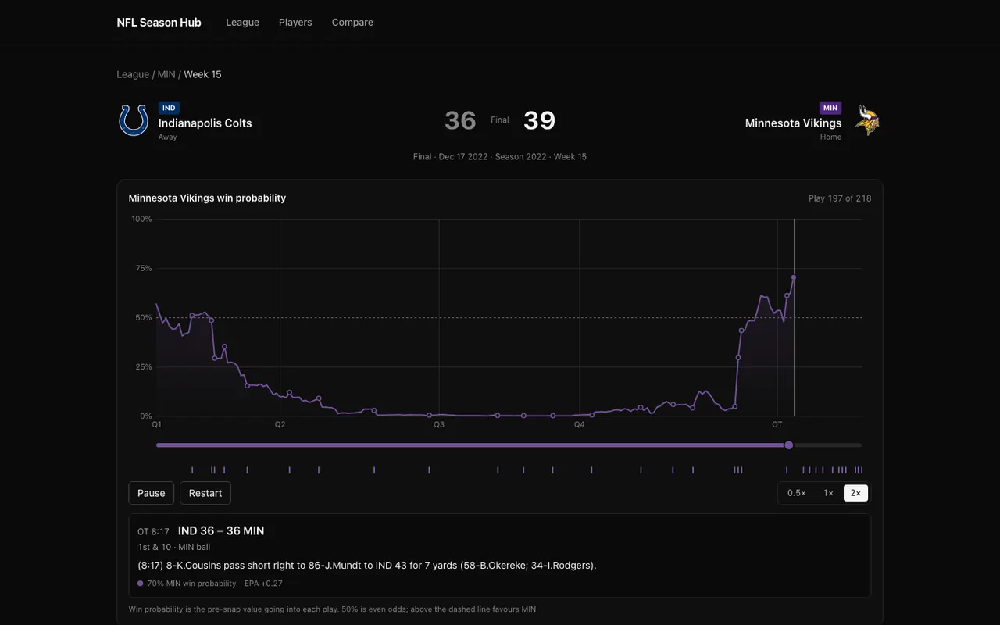
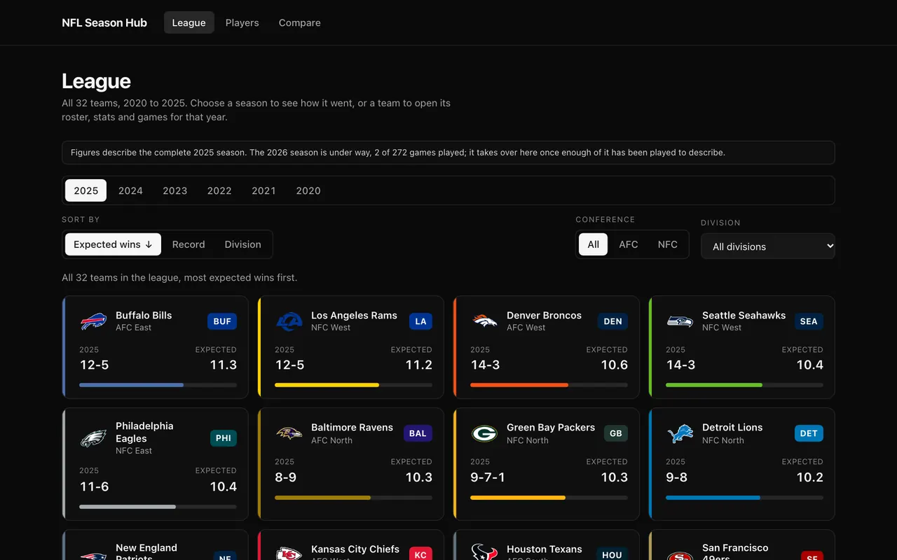
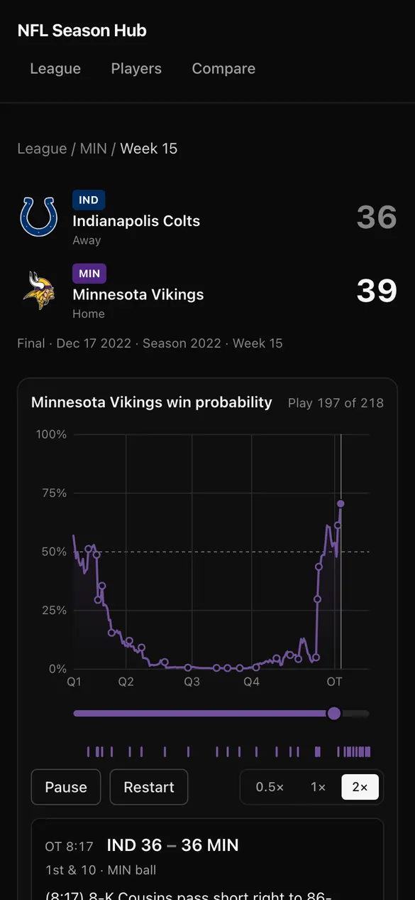
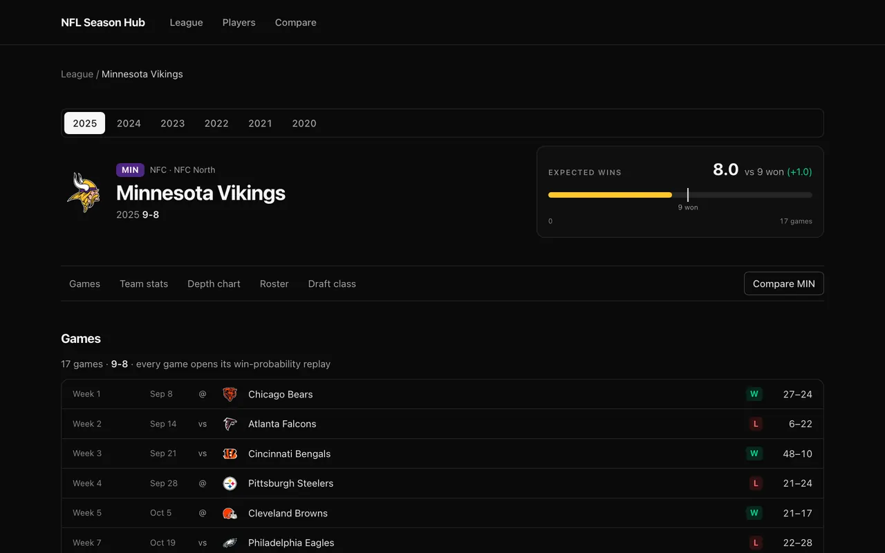

Case study · Personal product
NFL Season Hub
Six NFL seasons you can drill through, from league standings to any team and any game, ending in a scrubbable replay of how that game's win probability actually moved.

Overview
A way to see the shape of a game
NFL play-by-play data is public and excellent. nflverse publishes every play of every game, win probability included. It is also almost unreadable: season-sized files with hundreds of columns, wonderful for a modelling notebook and useless if your question is "what did that comeback look like?"
NFL Season Hub is a static site that takes a visitor from all 32 teams down to a single play in three clicks, and then plays the game back to them.
- League dashboard. 32 teams, sortable and filterable. The view lives in the URL, so a filtered dashboard is a link you can send.
- Team page. Projected wins against last season, offensive and defensive splits, depth chart, roster, draft class and every game as a route into its replay.
- Game replay. The flagship: win probability animated one play at a time on a canvas, with decisive plays marked, a scrubber, and a context box that always says where the game stands.
Responsibilities
What I built
Everything. It is a solo project, so the product decisions, the interface, the data pipeline and the test suite are all mine.
- Product and interface: the League → Team → Game → Replay flow, the layout, and the replay's controls.
- Data pipeline: a Python ETL in polars over nflverse, writing 1,727 typed JSON files, plus a validator that enforces the contract.
- Front end: React 19, TypeScript and Vite, with lazy-loaded routes and a custom canvas renderer.
- Quality: 216 unit and component tests, 6 end-to-end specs on two devices, CI on every push, and a keyboard-only accessibility audit.
Challenge
Three hard problems
Turning a spreadsheet into a story
The gap was never the data. It was that nothing turns a row of home_wp = 0.11 into
the thing a person came for.
Animating at 60 frames a second inside React
The replay advances a cursor sixty times a second. Storing that in useState means a
render, a reconciliation and a commit per frame, for a chart whose only change is a few hundred
pixels of line.
Staying fast with no backend
1,693 games and 273,325 plays, served without a server, a database or a cold start.
Process
Validate cheaply, then build the hard thing once
- Data first. The ETL runs locally, by hand, and writes static JSON. A finished season is a fact, so freshness is a human action, not a runtime one.
- Prove the data with a library. The win-probability chart was first built in Recharts to validate the numbers. It did that job and was then deleted.
- Then build the flagship. A custom canvas renderer, because no charting library gives per-frame control of a 218-point animated reveal.
- Check the contract from both sides.
validate.pyon the producing side; a runtime check in the browser on the consuming side. - Test what could break. Every test targets behavior that could plausibly fail. Two exist because the bug happened first.
- Audit by hand. Keyboard only, contrast read from the rendered page, Lighthouse as a floor rather than the audit.
Engineering
The decision everything follows from
The data never changes at runtime. That one decision removes the database, the API, the cache-invalidation problem and the cold start, and replaces them with a build step.
Why the replay is not React state
The cursor is a useRef, a fractional play index. A requestAnimationFrame loop
advances it by elapsed time and repaints the canvas directly. The two facts a person can see, whether
it is running and which play it is on, are published through useSyncExternalStore, so React
re-renders once per play rather than once per frame.
rAF loop ──writes──▶ cursor (ref) ──read by──▶ canvas repaint 60×/s
│ scrubber thumb 60×/s
└── useSyncExternalStore ──▶ React 8×/s
Tradeoffs I made on purpose
- Static JSON over an API. A 15 MiB repository and a manual re-run, in exchange for no server, no database and no failure mode worse than a 404.
- Framer Motion only where it animates. Importing it into the shared layout pushed the entry chunk from 84 kB to 110 kB. The page fade became nine lines of CSS.
- Logos at the size they are drawn. The league page was loading 1,789 KiB of 500px logos to show them at 40px. Requesting the right size brought it to 262 KiB.
- Contract checks are cheap. Validating the largest file takes 0.23 ms, against 0.57 ms for
JSON.parseon the same file.
Showcase
Try the replay
This is the real data for the largest comeback in NFL history, running on the same approach as the production app: one cursor, advanced by elapsed time, repainting a canvas.
Press play to watch the game unfold.



Outcome
Measured, not estimated
Lighthouse 13.4.1 against the production build, desktop and mobile presets.
- Lazy loading verified from the network log. The replay engine downloads only when someone opens a game.
- Every control reachable by keyboard. The 41-marker key-play rail is one tab stop, with arrow, Home and End keys.
- Contrast measured on the real surface. All 88 text styles clear 4.5:1, and team colors are lifted until their curve clears 3:1.
Lessons
What I'd take to the next project
- Validate with the cheap tool, then replace it. Recharts proved the data before I invested in the canvas. That is cheaper than guessing, and cheaper than building the hard thing twice.
- Measure before optimizing. Caching the static chart background to an offscreen bitmap was the obvious optimization. Measured, it cost more in blitting than it saved, so it was not done.
- A disabled button can steal focus. Disabling Restart at play 0, which pressing it causes, moved focus to the page body. Restart is never disabled now, and a test says so.
What I'd build next
- Compare two games, or two seasons, on one axis.
- A drive-level layer, so the replay can skip forward a drive at a time.
- A shareable link into a moment, such as
/game/<id>?play=142.